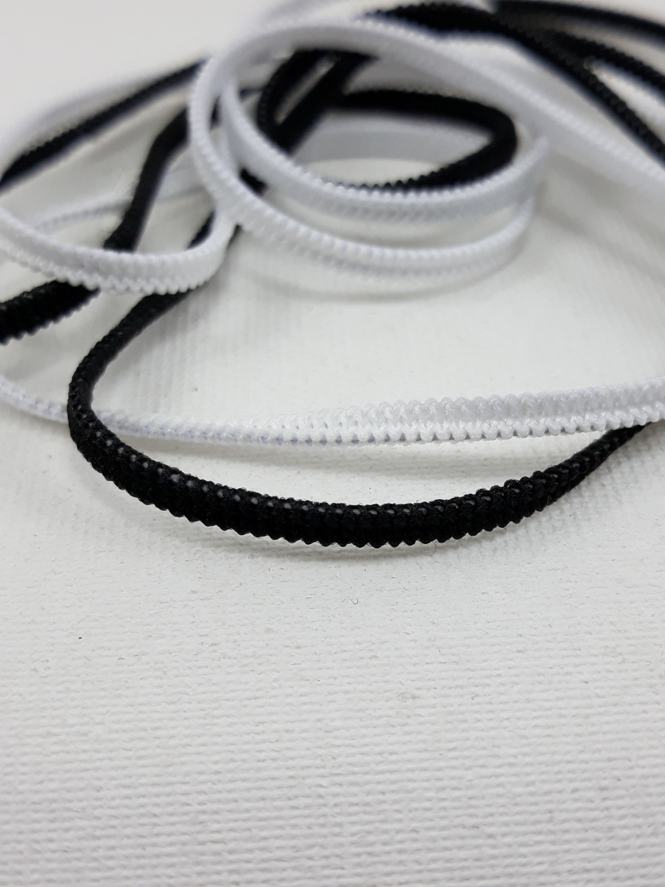

SEL - GUMA
2020.10.29 11:24
Prisijungti
Registruotis
Klausytojams | Muzikantams Leidykloms | Verslui Registruotis NELEISK LIETUVIŠKAI
MUZIKAI NUTILTI!
Jūsų parama palaiko Lietuvos atlikėjus ir grupes.
Investuok į lietuvišką muziką.
Kviečiame paremti savo mylimus atlikėjus ir grupes! Rėmimo suma yra priskiriama grupei ar atlikėjui ir išmokama kartu su atlygiu už perklausas. Paremti galite naudojantis Paysera ar Paypal paslauga kiekvieno atlikėjo/grupės profilyje paspaudę mygtuką PAREMTI.
Ačiū, kad mylite ir remiate lietuvišką muziką!
Prisijungti Klausytis PAGRINDINIS MUZIKA PRISIJUNGTI Naujausia Mėgstamiausia Žanrai Atlikėjai Atlikėjų grojaraščiai Grojaraščiai Metai GUMA SEL Groti viską sel mano juokas Paremti sel dar pasilik Paremti sel žodžiai apie tave Paremti sel mano norai Paremti sel sapnai Paremti sel guma Paremti sel lengvai Paremti sel kažkur yra šalis Paremti sel mano naktys Paremti sel pamiršk mane Paremti sel aš noriu skristi Paremti sel mano juokas (drum'n'bass mix) Paremti Norint klausytis reikia prisijungti GROJARAŠTIS Privatumo politika © 2014-2020 Lietuvos gretutinių teisių asociacija AGATA Kraunama NAUDOJATE NELEISTINAS PROGRAMAS, PRAŠOME PAŠALINTI, NORINT NAUDOTIS TINKLAPIU.Šioje svetainėje naudojami slapukai
Informuojame, kad šioje svetainėje naudojami slapukai (angl. cookies). Sutikdami, paspauskite mygtuką „Sutinku“ arba naršykite toliau. Savo duotą sutikimą bet kada galėsite atšaukti pakeisdami savo interneto naršyklės nustatymus ir ištrindami įrašytus slapukus. Sutinku